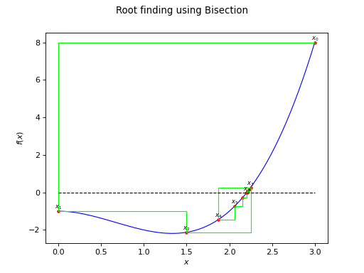

Bisection¶
(Source code, png)
{kind=link}

- class Bisection(*args)¶
Bisection algorithm solver for 1D non linear equations.
- Available constructor:
Bisection()
Bisection(absError, relError, resError, maximumFunctionEvaluation)
- Parameters:
- absErrorpositive float
Absolute error: distance between two successive iterates at the end point. Default is
 .
.- relErrorpositive float
Relative error: distance between the two last successive iterates with regards to the last iterate. Default is
.- resErrorpositive float
Residual error: difference between the last iterate value and the expected value. Default is
 .
.- maximumFunctionEvaluationint
The maximum number of evaluations of the function. Default is
 .
.
Methods
Accessor to the absolute error.
Accessor to the object's name.
getId()Accessor to the object's id.
Accessor to the maximum number of evaluations of the function.
getName()Accessor to the object's name.
Accessor to the relative error.
Accessor to the residual error.
Accessor to the object's shadowed id.
Accessor to the number of evaluations of the function.
Accessor to the object's visibility state.
hasName()Test if the object is named.
Test if the object has a distinguishable name.
setAbsoluteError(absoluteError)Accessor to the absolute error.
Accessor to the maximum number of evaluations of the function.
setName(name)Accessor to the object's name.
setRelativeError(relativeError)Accessor to the relative error.
setResidualError(residualError)Accessor to the residual error.
setShadowedId(id)Accessor to the object's shadowed id.
setVisibility(visible)Accessor to the object's visibility state.
solve(*args)Solve an equation.
- __init__(*args)¶
- getAbsoluteError()¶
Accessor to the absolute error.
- Returns:
- absErrorfloat
The absolute error: distance between two successive iterates at the end point.
- getClassName()¶
Accessor to the object’s name.
- Returns:
- class_namestr
The object class name (object.__class__.__name__).
- getId()¶
Accessor to the object’s id.
- Returns:
- idint
Internal unique identifier.
- getMaximumFunctionEvaluation()¶
Accessor to the maximum number of evaluations of the function.
- Returns:
- maxEvalint
The maximum number of evaluations of the function.
- getName()¶
Accessor to the object’s name.
- Returns:
- namestr
The name of the object.
- getRelativeError()¶
Accessor to the relative error.
- Returns:
- relErrorfloat
The relative error: distance between the two last successive iterates with regards to the last iterate.
- getResidualError()¶
Accessor to the residual error.
- Returns:
- resErrorfloat
The residual errors: difference between the last iterate value and the expected value.
- getShadowedId()¶
Accessor to the object’s shadowed id.
- Returns:
- idint
Internal unique identifier.
- getUsedFunctionEvaluation()¶
Accessor to the number of evaluations of the function.
- Returns:
- nEvalint
The number of evaluations of the function.
- getVisibility()¶
Accessor to the object’s visibility state.
- Returns:
- visiblebool
Visibility flag.
- hasName()¶
Test if the object is named.
- Returns:
- hasNamebool
True if the name is not empty.
- hasVisibleName()¶
Test if the object has a distinguishable name.
- Returns:
- hasVisibleNamebool
True if the name is not empty and not the default one.
- setAbsoluteError(absoluteError)¶
Accessor to the absolute error.
- Parameters:
- absErrorfloat
The absolute error: distance between two successive iterates at the end point.
- setMaximumFunctionEvaluation(maximumFunctionEvaluation)¶
Accessor to the maximum number of evaluations of the function.
- Parameters:
- maxEvalint
The maximum number of evaluations of the function.
- setName(name)¶
Accessor to the object’s name.
- Parameters:
- namestr
The name of the object.
- setRelativeError(relativeError)¶
Accessor to the relative error.
- Parameters:
- relErrorfloat
The relative error: distance between the two last successive iterates with regards to the last iterate.
- setResidualError(residualError)¶
Accessor to the residual error.
- Parameters:
- resErrorfloat
The residual errors: difference between the last iterate value and the expected value.
- setShadowedId(id)¶
Accessor to the object’s shadowed id.
- Parameters:
- idint
Internal unique identifier.
- setVisibility(visible)¶
Accessor to the object’s visibility state.
- Parameters:
- visiblebool
Visibility flag.
- solve(*args)¶
Solve an equation.
Available usages:
solve(function, value, infPoint, supPoint)
solve(function, value, infPoint, supPoint, infValue, supValue)
- Parameters:
- function
Function The function of the equation
![function(x) = value]() to be solved in the
interval
to be solved in the
interval ![[infPoint, supPoint]]() .
.- valuefloat
The value of which the function must be equal.
- infPointfloat
Lower bound of the interval definition of the variable
 .
.- supPointfloat
Upper bound of the interval definition of the variable
.- infValuefloat
The value such that
![infValue = function(infPoint)]() . It must be of
opposite sign of
. It must be of
opposite sign of  .
.- supValuefloat
The value such that
![supValue = function(supPoint)]() . It must be of
opposite sign of
. It must be of
opposite sign of  .
.
- function
- Returns:
- resultfloat
The result of the root research.
Notes
If the function
 is continuous, the Bisection solver will converge
towards a root of the equation in
. If not, it will converge towards either a root or
a discontinuity point of on . Bisection
guarantees a convergence.
is continuous, the Bisection solver will converge
towards a root of the equation in
. If not, it will converge towards either a root or
a discontinuity point of on . Bisection
guarantees a convergence.